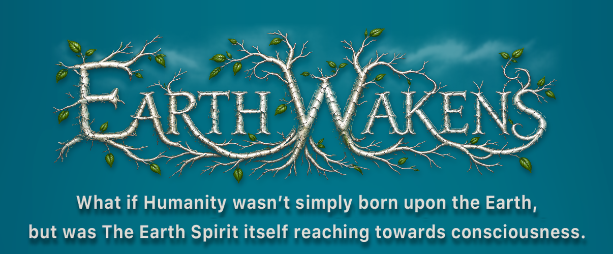

Read the Story and enjoy playing the card game EarthWakens.
Existence is the Spiritual Realm. If something like a rock in space exists and is in the spiritual realm, it then has a spirit as all things do.
Life on earth began 4.28 Billion years ago.
This Rock, This Living World, emerges as The Earth Spirit when it becomes aware of The Spiritual Realm and infinity.
Cognizant and aware of the Spiritual Realm and infinity.
After breaking the bounds from the physical world, The Earth Spirit divides into separate genders to keep its connection in The Spiritual Realm.
The game Earth Wakens follows the story from the Earth as a lifeless rock to a living Metacognizant world. The Earth Spirit’s physical form and existence become one in The Spiritual Realm.